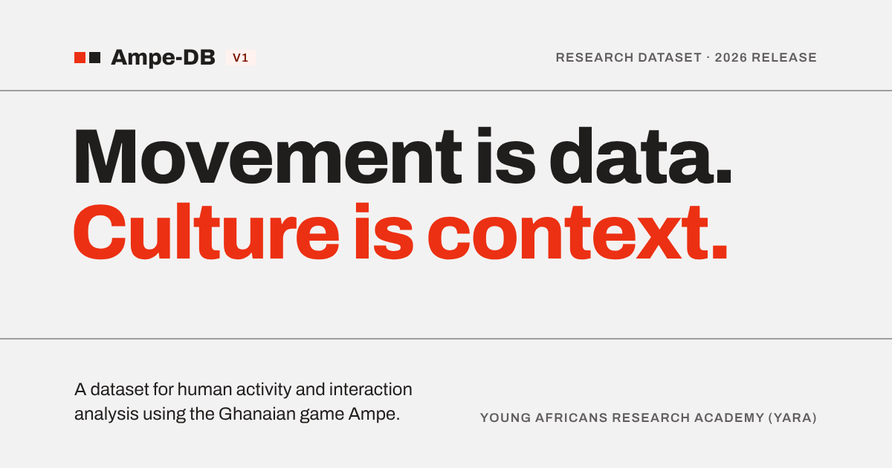

Favicon, social cardand the phone menu.
The three remaining pieces from README → “Not designed yet”, plus the review of the small-screen menu on the live build. The 404 page has its own page in this project.
Favicon
The brand mark alone — the red and ink squares from the header — drawn edge to edge on a 32-unit grid (14 + 4 + 14) so it lands on whole pixels at 16×16 (7 + 2 + 7). The wordmark is dropped below 64px.
Yes, it changes for dark tabs. The SVG carries a prefers-color-scheme: dark rule that turns the ink square to the page ground (#f3f2f2); the red square never changes.
These two can’t adapt, so they sit on a solid #f3f2f2 tile with the mark inset — readable on light and dark alike. The touch icon keeps a 27px margin so iOS’s corner mask never clips a square.
| File | Size | Ground | Download |
|---|---|---|---|
favicon.svg | 32-unit viewBox, any size | Transparent; ink square → #f3f2f2 in dark mode | favicon.svg |
favicon.ico | 32×32 + 16×16 inside | Solid #f3f2f2, squares 12/4/12 (6/2/6 at 16) | favicon.ico |
apple-touch-icon.png | 180×180, RGB, no alpha | Solid #f3f2f2, squares 54/18/54 | apple-touch-icon.png |


Next.js App Router: drop them in app/ as favicon.ico, icon.svg and apple-icon.png and the tags are generated. Otherwise:
<link rel="icon" href="/favicon.ico" sizes="32x32"> <link rel="icon" href="/favicon.svg" type="image/svg+xml"> <link rel="apple-touch-icon" href="/apple-touch-icon.png">
Social preview image
The Home headline as a poster: brand row, two 2px rules, the two-line H1 with the red second line, and the dataset line. Everything sits inside the central 1000×520 (outlined in red below, not part of the image); only the rules run to the edges, so a crop loses nothing.


<meta property="og:image" content="https://ampe-db-website.vercel.app/og-image.png"> <meta property="og:image:width" content="1200"> <meta property="og:image:height" content="630"> <meta property="og:image:alt" content="Ampe-DB V1. Movement is data. Culture is context. …"> <meta name="twitter:card" content="summary_large_image">
Next.js: app/opengraph-image.png plus app/opengraph-image.alt.txt does the same. Use the absolute production URL once the domain is final.
Small-screen menu — review
The full-screen menu in the build is the design: keep it. It matches the handoff spec row for row, and the behaviour is right.
| Check | Result |
|---|---|
| Header row | Brand + Menu (44px) at 360/390; “Download dataset” is in the header at 768 (spec: from 640). No sideways scroll at any width. |
| Panel | Full screen, no animation, no radius or shadow. Brand + Close on a 2px rule; seven numbered rows on 1px rules; labels 34px at 768. |
| Current page | Red square and aria-current on the right row (checked on Home, Research, Getting the Database). |
| Focus and scroll | Opens with focus on Close, page scroll locked, Tab stays inside, Escape closes and returns focus to Menu. |
| Links | Choosing a row navigates and closes the panel. |
| Short screens | At 360×640 the panel scrolls about 60px to reach the YARA line — expected. |
role="dialog" but no aria-modal="true". Add it, with an aria-label of “Site menu”, so screen readers treat the page behind as inert.